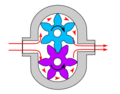
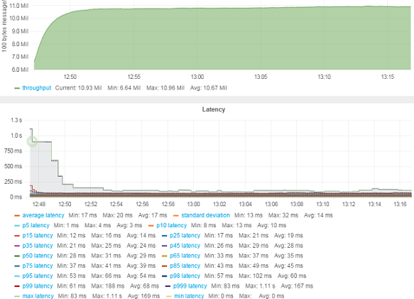

Gearpump Overview
GearPump is a real-time big data streaming engine. It is inspired by recent advances in the Akka framework and a desire to improve on existing streaming frameworks. Gearpump is event/message based and featured as low latency handling, high performance, exactly once semantics, dynamic topology update, Apache Storm compatibility, etc.
The name GearPump is a reference to the engineering term “gear pump,” which is a super simple pump that consists of only two gears, but is very powerful at streaming water.

Gearpump Technical Highlights
GearPump’s feature set includes:
- Extremely high performance
- Low latency
- Configurable message delivery guarantee (at least once, exactly once).
- Highly extensible
- Dynamic DAG
- Storm compatibility
- Samoa compatibility
- Both high level and low level API
Gearpump Performance
Per initial benchmarks we are able to process 11 million messages/second (100 bytes per message) with a 17ms latency on a 4-node cluster.

Gearpump and Akka
Gearump is a 100% Akka based platform. We model big data streaming within the Akka actor hierarchy.